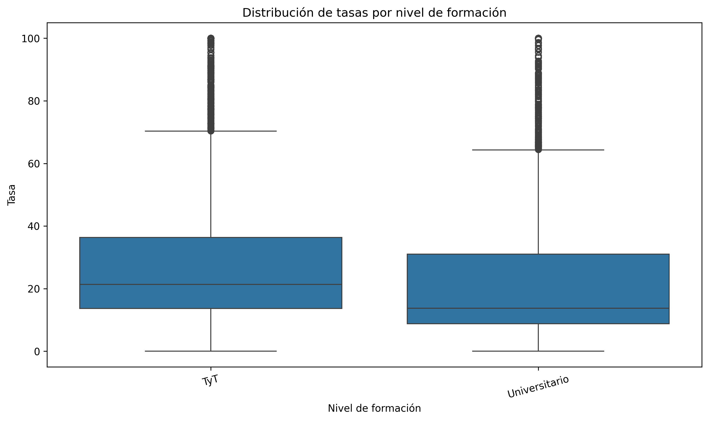

Objetivo del análisis
Determinar si existen diferencias estadísticamente significativas entre las tasas educativas de los niveles de formación Técnico y Tecnológico (TyT) y Universitario.
Estadística descriptiva
TyT
Media: 27.16
Mediana: 21.36
Desv. estándar: 20.11
Universitario
Media: 21.10
Mediana: 13.74
Desv. estándar: 17.86
Los programas TyT presentan una tasa promedio superior a la observada en programas universitarios.
Distribución de tasas por nivel de formación

Interpretación
- La mediana observada en TyT es superior a la del nivel Universitario.
- Existen valores atípicos en ambos grupos.
- La dispersión de las tasas es considerable.
- Se observan diferencias en la distribución de ambos niveles.
Hipótesis evaluadas
Hipótesis nula (H₀)
No existen diferencias significativas entre las medias de las tasas.
Hipótesis alternativa (H₁)
Sí existen diferencias significativas entre las medias de las tasas.
Resultado ANOVA
F Statistic
870.649
p-value
5.53 × 10⁻¹⁸⁹
✅ Decisión estadística
Se rechaza la hipótesis nula (H₀).
Existen diferencias estadísticamente significativas entre los niveles de formación evaluados.
Prueba Post Hoc de Tukey
| Grupo 1 | Grupo 2 | Diferencia media | p-ajustado | Significativa |
|---|---|---|---|---|
| TyT | Universitario | -6.0595 | 0.000 | Sí |
La prueba de Tukey confirma que la diferencia observada entre ambos niveles de formación es estadísticamente significativa.
Hallazgos clave
Hallazgo 1
TyT presenta tasas promedio superiores al nivel Universitario.
Hallazgo 2
La diferencia encontrada no es producto del azar.
Hallazgo 3
El nivel de formación influye significativamente en el comportamiento de las tasas.
Hallazgo 4
Los resultados justifican estrategias diferenciadas según nivel educativo.
Implicaciones para la toma de decisiones
- Diseñar estrategias diferenciadas para cada nivel de formación.
- Priorizar acciones institucionales en grupos con mayores tasas.
- Realizar seguimiento periódico de indicadores educativos.
- Complementar el análisis con variables académicas y sociodemográficas.
Conclusión General
La prueba ANOVA evidenció diferencias estadísticamente significativas entre las tasas educativas de los niveles TyT y Universitario. La prueba post hoc de Tukey confirmó dichas diferencias, indicando que el nivel de formación es un factor relevante en el comportamiento de las tasas analizadas. Estos resultados aportan evidencia cuantitativa para apoyar la toma de decisiones institucionales y el diseño de estrategias orientadas al mejoramiento de los indicadores educativos.